Building a very strange strand of DNA at Merge labs
I build machine learning models on modern, large databases of biological sequences. My projects either build models that can leverage these datasets in new ways, or seek to understand why these models work.
Previously: Faculty Fellow at NYU Courant Institute hosted in the Wilson lab, PhD at Harvard Systems Biology with Debora Marks (2023), Postdoc at Jura Bio (2023), BS in Biochemistry & Mathematics from University of Toronto (2019).
* denotes equal contribution
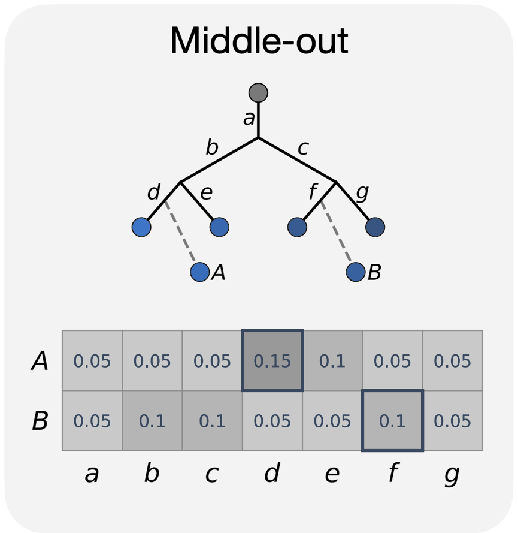
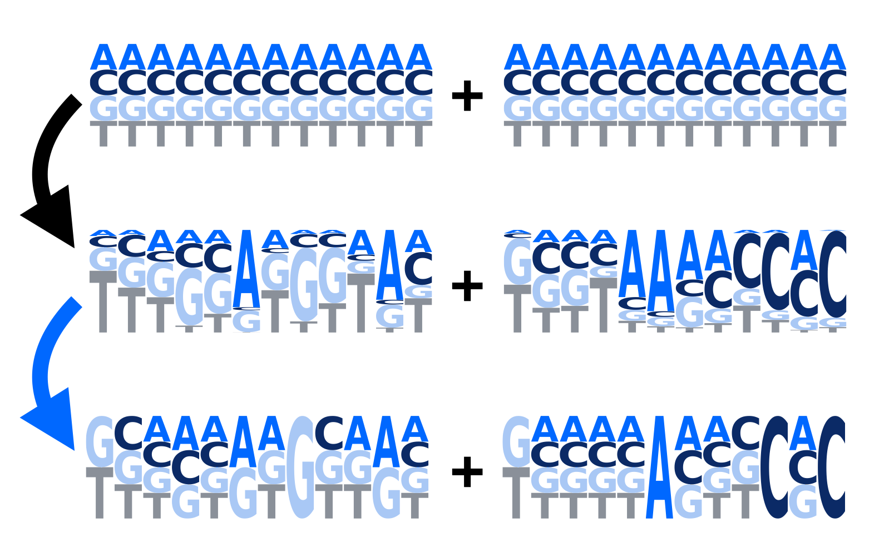
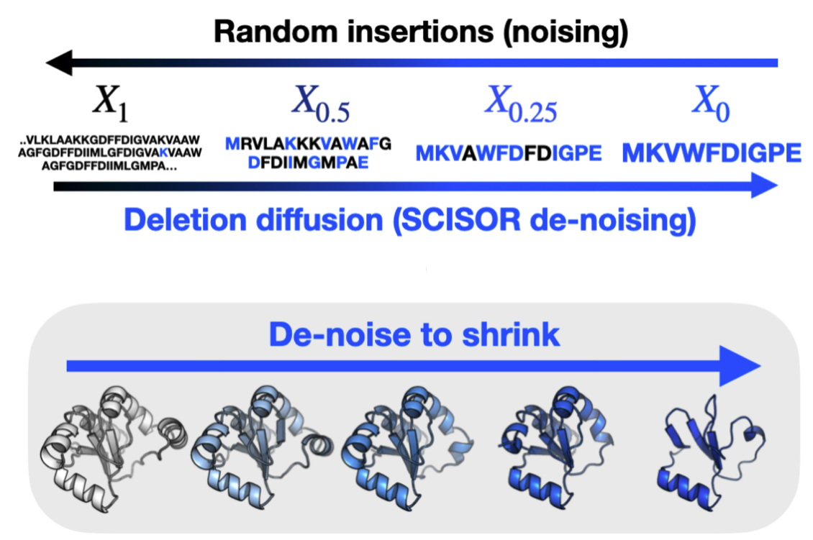
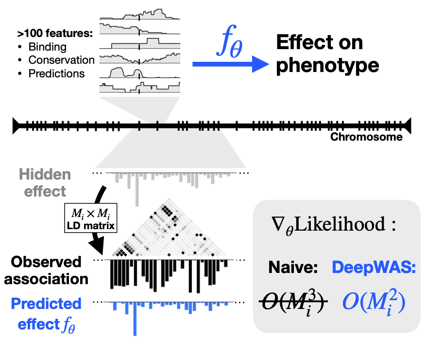
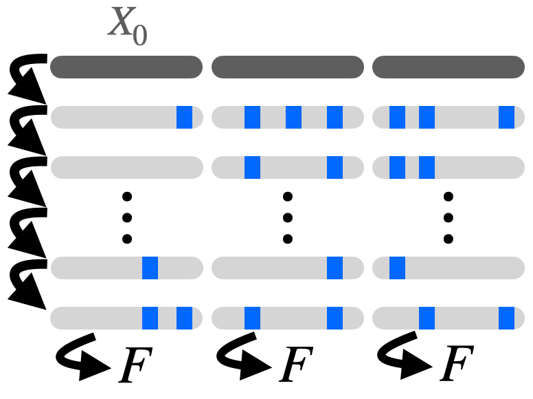
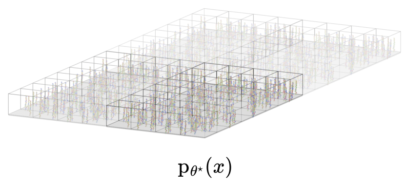
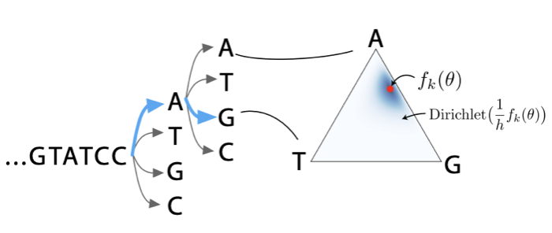
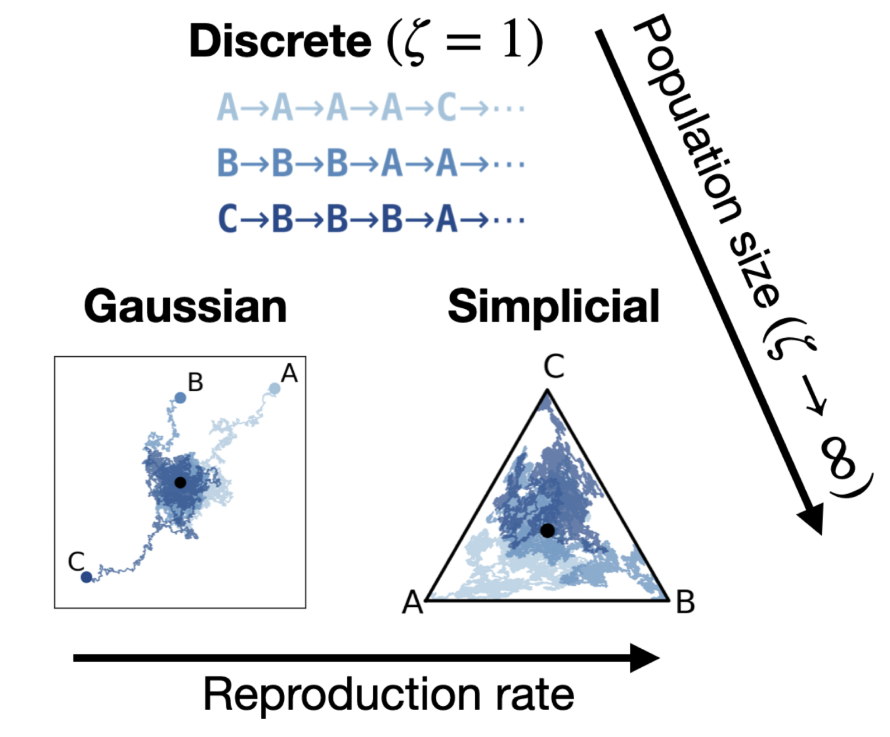
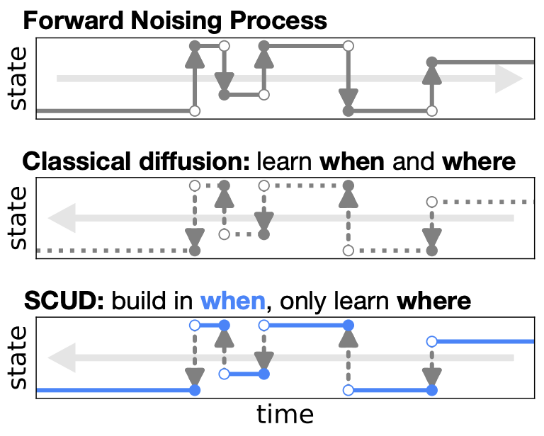
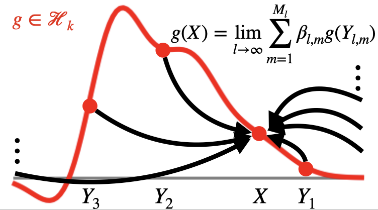
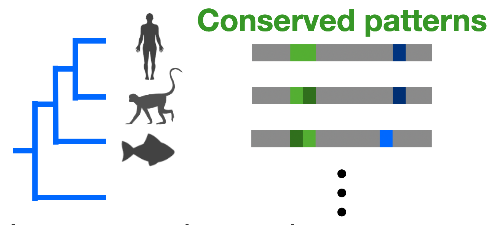
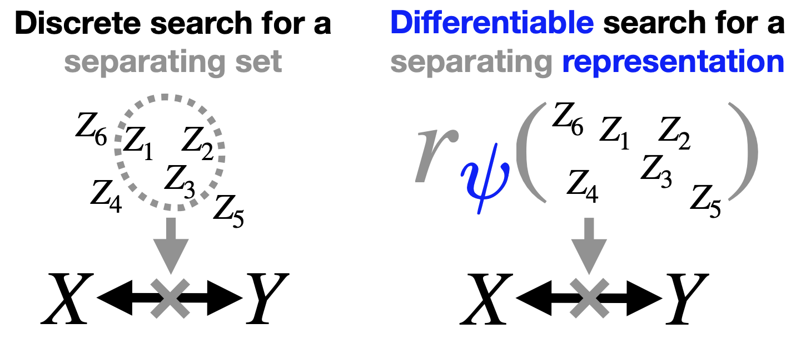
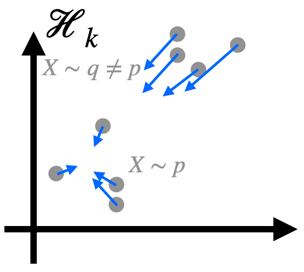